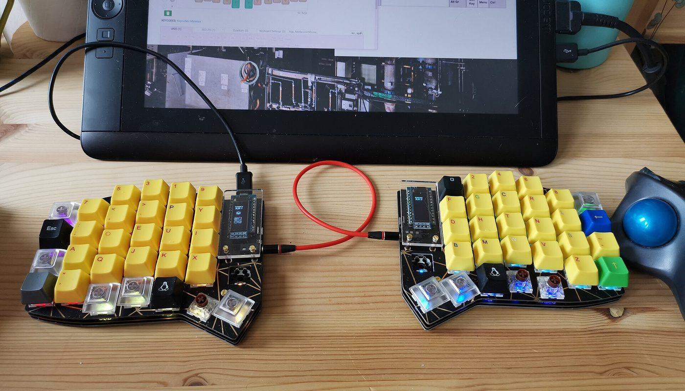
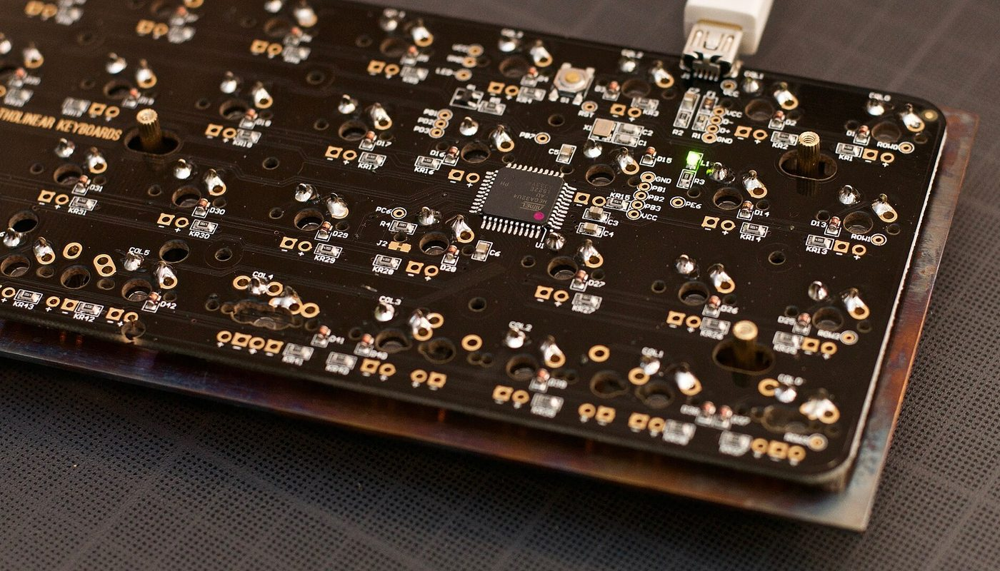

Claviers · un lien partenaire Amazon.fr, étiqueté · sources relevées le 2 oct. 2026
Clavier ergonomique split : un Corne à 72 € face aux 365-499 $ des marques, et ce qu'il faut savoir avant de commander

Le Corne est un clavier ergonomique en deux moitiés, à colonnes décalées, dont le design est libre et le firmware open source. Un acheteur français l'a eu à 72 € livré sur AliExpress, quand les marques de référence de la même famille se vendent 365 $ et 499 $. Le même usage, mais pas le même produit — et cette page dit exactement où passe la différence.
Un lien partenaire Amazon.fr, étiqueté — voir comment ça marche Prix lus le 2 oct. 2026
En bref
- Le design est libre et le projet est massif. Le dépôt public du Corne (foostan/crkbd) comptait 7 669 étoiles et 1 099 forks le 2 octobre 2026, sous licence CC BY 4.0 : n'importe qui peut fabriquer, vendre ou modifier la carte.
- C'est le firmware qui fait le clavier. QMK et VIA sont libres : les layers, les home-row mods et la personnalisation sont les mêmes sur un kit à 72 € que sur un clavier de marque.
- L'écart de prix est réel mais il n'est pas magique. Un acheteur public résume bien : sur AliExpress « ils rognent sur les switches et les keycaps ».
- Prix relevés le 2 oct. 2026 : kit Corne AliExpress rapporté à 72 € livré ; Corne assemblé chez un revendeur européen à 89,90 € TTC ; ZSA Moonlander Mark I à 365 $ port inclus ; Kinesis Advantage360 Pro à 499 $ et plus.
- Ce qui n'est pas chiffré : aucun prix AliExpress n'a pu être lu directement (page d'annonce non accessible depuis notre poste) — le chiffre de 72 € vient d'un acheteur, il est daté et cité plus bas.
De quoi on parle exactement
Un clavier « split » est coupé en deux : chaque main a sa moitié, que vous posez où vous voulez. « Columnar staggered » veut dire que les colonnes de touches sont décalées verticalement pour suivre la longueur réelle des doigts, au lieu d'être alignées en quinconce comme sur un clavier classique.
Le Corne combine les deux : deux moitiés, trois rangées par main, trois touches de pouce par moitié, et un firmware libre (QMK ou VIA) qui décide de tout ce que fait chaque touche.
Trois précisions qui décident si ce clavier est pour vous :
- Il faut réapprendre à taper. Les colonnes décalées et les trois touches de pouce changent la position des touches ; la plupart des utilisateurs passent par une période d'adaptation de quelques semaines.
- Le montage est simple ou pénible selon le kit — les versions hot-swap ne demandent aucune soudure, les autres si.
- Ce n'est pas un produit fini qu'on rachète à l'identique. Un kit AliExpress, un kit monté en Europe et un clavier de marque partagent la même géométrie et le même firmware, mais pas la même garantie, ni le même support, ni la même finition.
Les prix : ce qui est lu, où, et quand
Tous les montants ci-dessous ont été relevés le 2 octobre 2026, sauf le prix AliExpress qui est un prix d'achat rapporté publiquement (et daté). Les deux prix en dollars sont convertis au taux de référence de la Banque centrale européenne du 1er octobre 2026 (1 EUR = 1,1298 USD) — le taux bouge, c'est une conversion, pas un prix affiché.
Ce que coûte un clavier split de cette famille (€, prix lu ou rapporté)
Barres proportionnelles aux montants ci-dessus, base à zéro. Le kit AliExpress est un prix rapporté par un acheteur français (voir sources) : nous n'avons pas pu lire l'annonce nous-mêmes. Les deux montants en dollars sont convertis, pas affichés en euros par le vendeur. Le port du Corne Keebart n'est pas inclus dans les 89,90 € TTC affichés sur le configurateur.
| Où | Quoi | Prix affiché / rapporté | Statut du prix |
|---|---|---|---|
| AliExpress | Kit Corne v4 complet, monté par l'acheteur | 72,00 € livré | rapporté par un acheteur FR, 13 janv. 2026 |
| Keebart (EU) | Corne MX Pro assemblé, RP2040, boîtier fermé | 89,90 € TTC | lu sur le configurateur, 2 oct. 2026 |
| ZSA (US) | Moonlander Mark I, port inclus | 365 $ (≈ 323 €) | lu sur la page d'achat, 2 oct. 2026 |
| Kinesis (US) | Advantage360 Pro | 499 $ et plus (≈ 442 €) | lu sur la boutique, 2 oct. 2026 |
Le configurateur Keebart affiche des options payantes au-dessus du prix de base — par exemple + 39,90 € pour un support d'inclinaison réglable, + 4,99 € pour un extracteur de switches. Le prix que vous payez dépend donc de la configuration retenue.
Pourquoi un tel écart, et où il se paie
Le design est sous licence CC BY 4.0 : n'importe quel atelier peut le fabriquer sans payer de licence. Un clavier de marque vend, en plus du matériel, la conception, l'assemblage, le contrôle qualité, la garantie, le support et la logistique. Ces postes n'apparaissent pas dans une annonce à 72 € — et c'est précisément là que se logent les économies.
L'autre moitié de l'écart n'est pas un prix : c'est du temps. Un kit arrive en pièces, il faut monter, parfois souder, puis flasher le firmware et dessiner ses layers. Un clavier de marque arrive prêt, avec un logiciel de configuration et un numéro de série.
Le chemin intermédiaire existe : un revendeur européen qui assemble lui-même la carte à partir du même design, à 89,90 € TTC — soit le tiers d'un Moonlander, sans le montage.
Ce que les présentations oublient de dire

- Les switches et les keycaps ne sont pas neutres. C'est le poste que les kits bon marché compriment en premier, et c'est celui qui change le plus le ressenti à la frappe. Un kit nu à 72 € peut finir à 110 € une fois de bons switches ajoutés.
- Le délai de livraison depuis l'Asie se compte souvent en semaines, pas en jours, et les frais de douane et la TVA à l'import dépendent du vendeur et du montant déclaré — aucun de ces montants n'est publié sur l'annonce que nous avons pu voir.
- La garantie est celle du vendeur de la place de marché, c'est-à-dire très souvent l'expédition retour à votre charge, vers l'Asie.
- Le SAV et la communauté vivent dans les dépôts de code et sur les forums, pas dans un service client. C'est très bien documenté — mais en anglais.
- Rien ne s'adapte tout seul. Sans travail sur les layers, un clavier à 40 touches est moins confortable qu'un clavier classique ; le bénéfice ergonomique arrive après l'adaptation, pas à la sortie du carton.
- Le prix « à partir de » n'est pas un prix. L'Advantage360 Pro est annoncé à 499 $ et plus sur la boutique du fabricant : la configuration finale peut coûter davantage.
Trois chemins, selon le temps que vous voulez y passer
Aucun de ces trois chemins n'est « le bon » : ils ne vendent pas la même chose. Le seul choix vraiment coûteux, c'est d'acheter un kit en croyant acheter un clavier fini.
La checklist avant de commander
- Choisir la taille : 3x6 (42 touches) ou 3x5 (36 touches). Plus c'est petit, plus les layers comptent.
- Vérifier « hot-swap » explicitement dans l'annonce si vous ne voulez pas souder. L'absence du mot n'est pas un oui.
- Vérifier ce qui est inclus : carte(s) contrôleur, diodes, écran OLED, roues codeuses, boîtier, câble entre les moitiés, câble USB. Un « kit complet » ne l'est pas toujours.
- Compter les switches : il en faut exactement autant que de touches, plus quelques-uns de rechange. Les keycaps se vendent par tailles précises (1u, 1,5u).
- Vérifier le connecteur entre moitiés : TRRS, USB-C ou sans fil — deux moitiés incompatibles ne se parlent pas.
- Regarder le firmware prévu : QMK ou VIA. VIA permet de configurer sans recompiler, ce qui change tout pour un débutant.
- Estimer le coût total, port, TVA et douane compris — et comparer avec un montage européen à prix affiché TTC avant de valider le panier.
Par où commencer, concrètement
Ces liens sont ceux des projets et des vendeurs cités. Aucun n'est affilié : ils sont là pour que vous vérifiiez les prix et les spécifications à la source.
- Comprendre le design : dépôt public foostan/crkbd (GitHub) — cartes, fichiers, liste des pièces.
- Voir un montage européen et son prix : Corne MX Pro chez Keebart (89,90 € TTC au 2 octobre 2026, options en plus).
- Comparer avec une marque : ZSA Moonlander (365 $, port inclus) et Kinesis Advantage360 (499 $ et plus).
Le réflexe qui évite le mauvais achat : ouvrir le dépôt du design, compter les pièces, puis comparer le total port compris avec le prix d'un clavier assemblé. L'écart reste large ; il n'est simplement pas gratuit.
Questions
Un kit à 72 € et un clavier à 365 $ font-ils la même chose ?
Même géométrie, même firmware libre, usage comparable. Ce qui diffère : finition, switches, keycaps, garantie, support, et le temps de montage. Ce n'est pas le même produit — c'est le même usage pour une fraction du prix.
Faut-il souder ?
Ça dépend du kit. Les versions hot-swap non ; les autres oui, un point de soudure par touche. Cherchez le mot « hot-swap » dans l'annonce.
Où trouver un Corne déjà assemblé en Europe ?
Chez un revendeur qui assemble le design lui-même — Keebart en vend une révision sous le nom Corne MX Pro, à 89,90 € TTC affichés le 2 octobre 2026. C'est un achat prêt à l'emploi, pas un kit.
Pourquoi certains prix sont-ils en dollars ?
Parce que ZSA et Kinesis vendent en dollars depuis les États-Unis. Nous affichons le prix affiché par le vendeur, puis son équivalent en euros au taux BCE du 1er octobre 2026. Vérifiez le taux le jour de votre achat.
Cette page contient-elle des liens affiliés ?
Oui, un. Depuis le 3 octobre 2026, cette page porte un lien partenaire Amazon.fr (Identifiant de suivi : honestswitch-21), étiqueté « lien affilié » avec rel=sponsored. Le prix et la disponibilité sont affichés par Amazon au moment du clic — nous ne les recopions pas. Aucun autre lien de cette page ne nous rapporte quoi que ce soit.
Comment cette page est faite
- Un lien affilié, et un seul. Depuis le 3 octobre 2026, cette page porte un lien partenaire Amazon.fr (Identifiant de suivi : honestswitch-21), étiqueté « lien affilié » avec
rel="sponsored", à l'endroit où il apparaît. Nous ne recopions ni prix ni disponibilité : ils sont affichés par Amazon au moment du clic. Aucun autre lien de cette page ne nous rapporte quoi que ce soit. - Les prix sont ceux que nous avons lus nous-mêmes sur les pages des vendeurs, le 2 octobre 2026, sauf le prix du kit AliExpress, qui est un prix d'achat rapporté publiquement par un utilisateur et présenté comme tel, avec sa date.
- Les conversions en euros sont calculées au taux de référence de la Banque centrale européenne du 1er octobre 2026 (1 EUR = 1,1298 USD) ; ce ne sont pas des prix affichés en euros par les vendeurs.
- Nous ne fabriquons aucun avis, aucun témoignage et aucune statistique. Quand une information manque — ici, le prix exact d'une annonce AliExpress et le port depuis l'Asie — la page le dit au lieu de l'estimer.
- Corrections : si un prix a changé ou si nous nous sommes trompés, écrivez-nous, nous corrigeons et nous datons la correction.
Sources
- Dépôt public foostan/crkbd (README, licence CC BY 4.0, 7 669 étoiles, 1 099 forks) — lu le 2 octobre 2026.
- Page produit Corne MX Pro, Keebart (description, prix total 89,90 € TTC, options) — lue le 2 octobre 2026.
- Page d'achat ZSA Moonlander Mark I (« USD $365, Shipping included ») — lue le 2 octobre 2026.
- Boutique Kinesis, Advantage360 Pro (« $499+ ») — lue le 2 octobre 2026.
- Fil public Mastodon du 13 janvier 2026 : achat d'un Corne v4 sur AliExpress à 72 € livré ; remarque sur les switches et les keycaps — reproduit tel quel plus haut.
- Taux de change de référence de la Banque centrale européenne du 1er octobre 2026 : 1 EUR = 1,1298 USD.
Avis clients
Avis sur ce guide, publiés après vérification. Chaque avis négatif reçoit une réponse publique — c'est comme ça qu'on s'améliore.
Les premiers avis seront publiés ici dès que de vrais lecteurs en enverront.
Où acheter — lien partenaire
Le lien ci-dessous est un lien partenaire Amazon.fr (Identifiant de suivi : honestswitch-21). Si vous achetez en passant par lui, Amazon nous verse une commission : le prix que vous payez ne change pas. Nous ne recopions ni le prix ni la disponibilité, que vous voyez affichés par Amazon au moment du clic.